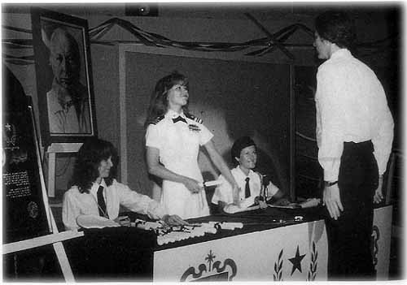

Chapter 22
Missing, Presumed Dead
'I would say that 99 per cent of what my father has written about his own life is false.' (Ron DeWolf, formerly L. Ron Hubbard Junior, May 1982)
 (Scientology's account of the years 1980-86.)
(Scientology's account of the years 1980-86.)
|
 |
| Under a portrait of a benign L. Ron Hubbard, an officer of the Sea Org hands out certificates at Gilman Hot Springs in 1981. The founder of Scientology had already gone to ground. |
For nearly six years, no one knew where L. Ron Hubbard was hiding or whether he was dead or alive. He was hunted high and low by television and newspaper reporters, federal investigators and law officers: none of them unearthed a single clue to his whereabouts. Mary Sue, his loyal and loving wife for more than twenty-five years, did not know where her husband was, neither did their children. The Commodore had effectively vanished.
After Hubbard skipped from Hemet with the Broekers, the apartments were closed. Once all the papers and personal effects had been packed and moved out, a working party cleaned each apartment with an alcohol solution to remove fingerprints, carefully wiping down all the walls, fixtures, door knobs, shelves, windows and mirrors. Pat Broeker, acting on Ron's orders, supervised the operation.
Broeker also directed, apparently at the behest of the absent Commodore, a massive corporate reorganization of the Church of Scientology, ostensibly designed to further shield Hubbard from legal liabilities and to ensure that the income flowing to him from the church, then running at about $1 million a week, could never be traced.[1] He was assisted by his friend and fellow messenger David Miscavige, a ruthless and ambitious nineteen-year-old who had learned management technique at the Commodore's knee, as a cameraman in the Cine Org. Miscavige was small, slight and asthmatic, but his lack of stature did not prevent him from adopting Hubbard's principle that the way to get things done was to browbeat subordinates by bellowing and threatening. His strutting figure became widely feared at Gilman Hot Springs and at the former Cedars of Lebanon Hospital in Los Angeles, recently purchased by the church for its new headquarters.
Many long-serving senior Scientologists were purged during the
_______________
1. Forbes, 26 October 1986
re-structuring and none had redress to Hubbard, for the messengers controlled his communication lines. Apart from the Broekers, Miscavige was said to be the only other Scientologist privy to the Commodore's location, although most of the staff at Gilman knew that Ron could not be far away because it only took Pat Broeker four or five hours to make the round trip from Gilman to Ron's hide-out.
During this upheaval, no one could be sure if it was really Hubbard who was issuing the orders or, indeed, if it was his ultimate intention that the messengers should take over control. In letters to those who had formerly been close to him, he gave no hint that he was juggling with the massive and complex structure of Scientology. 'Dearest Do,' he wrote to Doreen Smith in June 1980, 'life is a bit dull for me . . . I'll have to get up and get my wits to work to find something advantageous to do, so this is just a hello really. I hope you and the others are well and doing well . . .'[2]
David Mayo also received a number of letters from Hubbard and began to worry about his state of mind. 'In the first paragraph of one letter he said something like, "You might think I've gone crazy, but I'm still OK, just believe what I say is true." I remember thinking, God, whatever's coming must be pretty weird. It was real demented stuff, berating psychiatrists and claiming they were the root of all evil, not just on this planet but since time immemorial. He had it figured out that back in the beginning of the universe, psychiatrists created evil on a particular star system. When I read it I thought my God, he is crazy! He can exhort me not to think he's crazy, but this letter belies it.'[3]
In May 1981, when the purge was well under way and the messengers were consolidating their power, Miscavige moved to oust Mary Sue as Controller. He first chipped away at her position by making it known among her friends that Ron wanted her out. Then, at a stormy meeting in Mary Sue's office, Miscavige told the Commodore's wife that she was an embarrassment to the church, that she was certain to lose the appeal against her prison sentence and that it was important for the public image of the church that she be disciplined. Mary Sue lost her temper, screamed and raged at the upstart messenger and at one point threw an ashtray at him. But Miscavige stood his ground in the full knowledge that Mary Sue's position was hopeless. Without being able to count on her husband's support, she had no alternative but to step down. Afterwards she wrote bitter letters of complaint to Ron, but she suspected they were never delivered.[4] Miscavige would later complete his humiliation of the Hubbard family by having Arthur and Suzette ejected from Gilman Hot Springs as 'security risks' and appointing Suzette as his personal maid at the Cedars complex.[5]
_______________
2. Interview with Gillham
3. Interview with Mayo
4. Testimony, Church of Scientology v. Armstrong
5. Newsletter of Center for Personal Achievement, 13 February 1984
Mary Sue's resignation as Controller was not announced until September, when the church issued a press release piously justifying the 'shake-up' as a reaction to the indictments resulting from Operation Snow White and admitting that the Guardian's Office 'went adrift' by engaging in a battle with the federal government.
In April 1982, David Mayo received another long letter from the Commodore in which he said he did not expect to live much longer - a few months at the least, a few years at the most. Until he was able to pick up a new body, grow to adulthood and resume his rightful position as the head of Scientology, Hubbard was assigning responsibility for safeguarding the 'purity' of the technology to his friend Mayo. David Mayo believes that Miscavige and his cohorts interpreted this news as a threat to their position and began making plans to remove him.
Meanwhile, yet another enemy stepped into the arena to do battle with the church. A commission had been set up in Clearwater to investigate Scientology and its star witness was to be none other than L. Ron Hubbard Junior, who had recently changed his name to DeWolf in order to further disassociate himself from his father. Pink-faced and bespectacled, Nibs told the commission that his father was a habitual liar, paranoid, schizophrenic and megalomaniac who had fabricated most of his qualifications and written Dianetics off the top of his head without doing any research.
Worse was to come. In July, Nibs gave an interview to the Santa Rosa News-Herald in which he portrayed his father as a wife-beater who had experimented in black magic and fed him and his sister bubble gum spiked with phenobarbitol. 'He had one of those insane things, especially during the '30s, of trying to invoke the devil for power and practices. My mother told me about him trying out all kinds of various incantations, drugs and hypnosis . . . He used to beat her up quite often. He had a violent, volcano-type temper, and he smacked her around quite a bit. I remember in 1946 or 1947 when he was beating up my mother one night, I had a .22 rifle and I sat on the stairway with him in my sights and I almost blew his head off.'
It was not quite the pre-publication publicity St Martin's Press might have wished to launch Battlefield Earth: A Saga of the Year 3000, L. Ron Hubbard's first science-fiction book for more than thirty years. It was evident that the Commodore, wherever he was, had been busy, for the eight hundred-page Battlefield Earth was trumpeted not only as the longest science-fiction book ever written but merely the prelude to Mission Earth, an epic work of more than one million words due to be published in ten separate volumes over the next four years.
Battlefield Earth was the story of how Jonnie Goodboy Tyler, one of the few surviving human beings still on earth, turned the tables on
the huge, shambling, hairy aliens who had taken control of the planet. Many science-fiction buffs did not feel the work matched the pace and excitement of Hubbard's earlier fiction. Indeed, his agent, Forrie Ackerman, wondered if it had really been written by Ron and took the trouble to have the dedication on his personal copy ('To 4E, my favourite monster and long-time friend') verified by a handwriting expert. Hubbard's fellow sci-fi writer, A.E. van Vogt, whose endorsement of the book as a 'masterpiece' appeared prominently on the cover, later confessed that he had been daunted by its size and had not actually bothered to read it.[6] Hubbard always sent van Vogt and his wife a Christmas card and that year he included a note boasting that it had only taken him a month to write Battlefield Earth.
If Hubbard had lost his touch as a fiction writer, he was still perfectly capable of adding, even at this late stage in his life, further embellishments to his early career. 'I had, myself, somewhat of a science background,' he wrote in the introduction, 'had done some pioneer work in rockets and liquid gases, but I was studying the branches of man's past knowledge at that time . . . For a while, before and after World War Two, I was in rather steady association with the new era of scientists, the boys who built the bomb . . .'
It was essential for Hubbard's reputation that Battlefield Earth became a bestseller. The Church of Scientology guaranteed to buy 50,000 hardback copies, mounted a massive publicity campaign to support the book and instructed Scientologists throughout the United States to go out and buy at least two or three copies each. Battlefield Earth duly made its debut on the major bestseller lists. Those Scientologists who were beginning their prison sentences at around that time no doubt found sufficient leisure hours in their cells to enjoy their leader's latest oeuvre. Mary Sue's second in command, Jane Kember, was driven to prison by her friend Virginia Downsborough. 'It was pathetic really,' said Downsborough, 'even when she was actually on her way to prison Jane still thought that Ron was going to surface and fix everything. All she had done was what he had told her to and she couldn't believe that he would betray her. It was incredible.'[7]
Attorneys acting for Mary Sue had appealed, unsuccessfully, to the Supreme Court to have her conviction overturned and in January 1983 a US district judge in Washington rejected her request to be sent to a half-way house instead of prison. Mary Sue, who was then fifty-one, sobbed in the courtroom and said she wanted to 'sincerely and publicly apologize', but Judge Norma H. Johnson was unsympathetic, describing the offences as not only serious but heinous. 'Because of your leadership role,' she said, 'I find your degree of culpability was great.' Mary Sue reported next day to the Federal
_______________
6. Interview with van Vogt
7. Interview with Downsborough
Correctional Institution in Lexington, Kentucky, to begin serving a four-year term.
Meanwhile, Mary Sue's stepson had filed a petition in Riverside, California, for the trusteeship of his father's estate, claiming that Hubbard was either dead or mentally incompetent. Nibs, who was then working as the manager of an apartment block in Carson City, Nevada, and taking home $650 a month, estimated the estate was worth $100 million, which was an indication of how little anyone knew of how much the Commodore was making out of the Church of Scientology - during 1982 alone, Hubbard raked in at least $40 million from various Scientology corporations.[8]
The petition claimed Hubbard 'has lived a life characterized by severe mental illness . . . consistent failure . . . and the use of false and fraudulent, oftentime criminal means, to cover up these failures and to acquire wealth, fame and power in order to destroy his perceived "enemies".' DeWolf further alleged that the church leaders were stealing millions of dollars' worth of gems and cash from his father's estate.[9] Attorneys acting on Mary Sue's behalf filed a counterpetition asserting that Nibs was 'simply trying to get his hands on his Dad's money'.
This intriguing litigation generated a flurry of media speculation about the fate of the founder of Scientology, but the question of whether Hubbard was dead or alive was quickly settled when the church produced a signed declaration with the Commodore's fingerprints on every page, authenticated by independent experts. Hubbard described his son's allegations as malicious, false and ill-founded. 'With respect to Ronald DeWolf,' he wrote, 'I consider him neither a friend nor a family member in the true sense of the word. Although biologically he is my son, his hostility and animosity to me are apparent and have been for years . . . I am not a missing person. I am in seclusion for my own choosing. My privacy is important to me, and I do not wish it or my affairs invaded in the manner permitted by this action. As Thoreau secluded himself by Walden Pond, so I have chosen to do in my own fashion.'
The court accepted the documents as proof that Hubbard was still alive and dismissed DeWolf's suit, but in his determination to blacken Hubbard's name, Nibs had clearly inherited something of his father's perseverance. He surfaced again in the June 1983 issue of Penthouse magazine, making even more sensational allegations - that Hubbard had been involved in black magic since the age of sixteen, believed himself to be Satan, wanted to become the most powerful being in the universe, smuggled gold and drugs, was a sadist and a KGB agent. He had bought Saint Hill Manor, Nibs claimed, with money obtained from the Russians. 'Black magic is the inner core of Scientology,' Nibs
_______________
8. Forbes, 27 October 1986
9. Case No. 47150, re: the Estate of L. Ron Hubbard, Superior Court for the County of Riverside
stressed, 'and it is probably the only part of Scientology that really works. Also, you've got to realize that my father did not worship Satan. He thought he was Satan.'
It was wild stuff, perhaps a little too wild. Just like his father, Nibs lacked subtlety. Had he been more restrained, the interview might have made an impact. Instead, it simply strained the reader's credulity to such an extent that it was hard to decide who was the most deranged - L. Ron Hubbard Senior or L. Ron Hubbard Junior. In November 1983, an optimistic letter from Ron was distributed to Scientologists around the world to tell them how well everything was going. He described himself as 'ecstatic' with the state of management and confident that their legal problems were behind them. 'Those who were harassing Scientology in the past', he wrote, 'are beginning to present a panorama of coattails.' He explained that he had been working on very advanced research for the last two years which was 'opening the sky to heights not previously, envisioned' and concluded, 'So I wanted to say hello and to tell you the results of an overview of the game and, boy, does that future look good . . . Love, Ron.'
Ron did not bother to mention how Mary Sue was making out at the Federal Correctional Institution in Kentucky, neither did he comment on the time-bomb ticking away under the church in the slight form of his disenchanted archivist and biographer Gerry Armstrong, who had taken thousands of documents with him when he left Scientology - documents that proved the founder of Scientology was a charlatan and a liar.
For many months church attorneys had been trying to force Armstrong to return the material, having initially succeeded in having the documents placed under court seal. In May 1984, the issue went to trial at Los Angeles Superior Court before Judge Paul G. Breckenridge. A procession of witnesses trooped into the courtroom to tell their dismal stories about life in Scientology, at the end of which the judge refused to order the return of the documents and delivered a damning verdict on Scientology: 'The organization clearly is schizophrenic and paranoid, and this bizarre combination seems to be a reflection of its founder. The evidence portrays a man who has been virtually a pathological liar when it comes to his history, background and achievements. The writings and documents in evidence additionally reflect his egoism, greed, avarice, lust for power, and vindictiveness and aggressiveness against persons perceived by him to be disloyal or hostile.
'At the same time it appears that he is charismatic and highly capable of motivating, organizing, controlling, manipulating and inspiring his adherents. He has been referred to during the trial as a "genius", a "revered person", a man who was "viewed by his followers
in awe". Obviously, he is and has been a very complex person and that complexity is further reflected in his alter ego, the Church of Scientology . . . He has, of course, chosen to go into seclusion, but . . . seclusion has its light and dark side too. It adds to his mystique, and yet shields him from accountability and subpoena or service of summons.'
The judge then turned to Mary Sue, who had been released after serving a year of her prison sentence and had given evidence during the hearing: 'On the one hand she certainly appeared to be a pathetic individual. She was forced from her post as Controller, convicted and imprisoned as a felon, and deserted by her husband. On the other hand her credibility leaves much to be desired. She struck the familiar pose of not seeing, hearing, or knowing any evil . . .'
The Church of Scientology immediately appealed against the decision of the court, ensuring that the documents remained under seal and unavailable to hordes of waiting newspapermen, at least for the time being.
Three weeks later, a judge in the High Court in London joined in the attack by memorably branding Scientology as 'immoral, socially obnoxious, corrupt, sinister and dangerous' and describing the behaviour of Hubbard and his aides as 'grimly reminiscent of the ranting and bullying of Hitler and his henchmen'.
Mr Justice Latey had been hearing a case involving a custody dispute over the children of a practising Scientologist and his wife, who had broken away from the cult. Awarding custody to the mother, the judge gave Scientology short shrift: 'It is corrupt because it is based on lies and deceit and had as its real objective money and power for Mr Hubbard, his wife and those close to him at the top. It is sinister because it indulges in infamous practices both to its adherents who do not toe the line unquestioningly and to those outside who criticize or oppose it. It is dangerous because it is out to capture people, especially children and impressionable young people, and indoctrinate and brainwash them so that they become the unquestioning captives and tools of the cult, withdrawn from ordinary thought, living and relationship with others.' As to the Hubbards, the judge considered the evidence clear and conclusive: 'Mr Hubbard is a charlatan and worse, as are his wife Mary Sue Hubbard and the clique at the top, privy to the cult's activities.'
Following the teaching of L. Ron Hubbard, most Scientologists assumed that such attacks were orchestrated and engineered by their multitude of enemies. In 1985, when CBS's '60 minutes' investigated Scientology and presenter Mike Wallace quoted the 'schizophrenic and paranoid' decision of Judge Breckenridge, the Reverend Heber Jentzsch, president of the Church of Scientology, had a ready, if
incomprehensible, reply: 'I traced back where that came from, this whole schizophrenic paranoia concept that he has. It came from Interpol. At that time, the president of Interpol was a former SS officer, Paul Dickopf. And to find that Judge Breckenridge quoted a Nazi SS officer as the authority on Scientology, I find unconscionable . . .'
On 19 January 1986, Scientologists around the world received their last message from L. Ron Hubbard. In Flag Order number 3879, headed 'The Sea Org and The Future', he announced that he was promoting himself to the rank of Admiral. Alongside the proclamation, in a Scientology magazine, was a colour photograph of the grey-haired Commodore in his Sea Org peaked cap. He was grinning broadly, with a definite twinkle in his eyes. He had never looked more like Puck.
Creston, population 270, elevation 1110 feet, straddles a dusty road junction twenty miles north of the old mission town of San Luis Obispo in California. On the main street, which at most times of the day is deserted, there may be found the Loading Chute Steak Dining-Room, Creston Realty, a post office with a flagpole and two phone booths outside and a ramshackle wooden building with peeling red paint and a slipped sign proclaiming it to be the Long Branch general store. Rusting automobile hulks sprouting weeds, flea-bitten tethered horses and satellite dishes are a common feature in the gardens of the unassuming houses thereabouts.
On O'Donovan Road, which runs south off the main street, there is a small library, a school, the Creston Community Church Bible Classroom and the meeting hall of Creston Women's Club. Attached to the front of the meeting hall is a notice board offering for sale a horse, a pick-up and a '69 sedan, both these last 'needing work'. It is evident that the good people of Creston have yet to share the affluence to be seen displayed so ostentatiously elsewhere in California.
But further along O'Donovan Road, the rural landscape is clearly manicured by money. Rolling hills of green velvet are stitched with white picket fences and the houses stand well back from the road behind meadows sprinkled with wild daisies and studded with twisted oak trees. Four miles out of the town there is a graded track off to the right and a metal sign indicates it is a private road leading to the Emmanuel Conference Centre. This track winds up the hillside along the edge of the Whispering Winds Ranch, a 160-acre spread which, according to local gossip, was once owned by the actor Robert Mitchum. The gates to the ranch may be found after about 400 yards and the track then forks to a small cedarwood house on the right, continuing on the left up the hill to the Camp Emmanuel ecumenical retreat. It is a quiet place, a perfect place to hide.
In the summer of 1983 the ranch was bought by a young couple who called themselves Lisa and Mike Mitchell. The San Luis Obispo real estate agent involved in the sale guessed by his accent that Mitchell was from New York. He walked into the office straight off the street and said he wanted to buy a large, secluded ranch where he could breed Akitas, a rare Japanese dog. The realtor took Mitchell out to look at Whispering Winds, which was on the market for $700,000. He examined the ranch house with great care, even climbing up into the roof, where he seemed disconcerted by the insulation. 'I'll have to get that out of there,' he told the agent, explaining that his wife was allergic to fibreglass. Nevertheless, he liked the property and said he would buy it. Money was no problem - he had just come into an inheritance worth several million dollars. Good as his word, Mitchell paid the full price in cash, with thirty cashier's cheques drawn on several California banks.[10]
The Mitchells moved into the ranch shortly afterwards, along with their elderly father. They kept very much to themselves, avoiding all contact with their neighbours. Maxine Kuehl and Shirley Terry, who ran Camp Emmanuel, rarely spoke to either of them and knew nothing of the old man except that his name was Jack. Robert Whaley, a retired marketing executive from New York who lived in the cedar house overlooking Whispering Winds, similarly saw little of them, although he was intrigued by what was going on.
It seemed to Whaley that his new neighbours had more money than sense. The three-level ranch house was gutted and re-modelled not once, but several times. A lake in front of the house was widened and deepened and stocked with bass and catfish. A race-horse track, with an observation tower and viewing stands, was built to one side of the house and never used. Miles of white picket fence went up, either following the contours of the land or running absolutely straight. One section of fence was torn down three or four times, apparently because it was not straight enough. Thoroughbred horses, buffalo and llamas were soon grazing in the fenced paddocks, and swans and geese graced the lake.
'I was amazed how much they were spending on the place,' said Whaley. 'There was absolutely no regard for expense. When they were having new irrigation lines installed, they put in a twelve-inch pipe, big enough for a town. None of them was very friendly, but I once asked Mitchell who was doing all the planning and he said his wife's father, Jack, was handling most of it as he used to be a civil engineer.'[11]
While the renovations were under way, Jack lived in a $150,000 Bluebird motor home parked on the property, but he could often be seen pottering around in baggy blue pants and a yellow straw hat,
_______________
10. San Luis Obispo Telegram-Tribune, 30 January 1986
11. Interview with Robert Whaley, Creston, August 1986
taking photographs. He was overweight, and with his white hair and white beard, reminded Whaley of Kentucky Chicken's Colonel Sanders. Once Whaley walked across to Whispering Winds to see if he could borrow a tool and surprised the old man in the stable. Jack was busy filing a piece of metal and was evidently not pleased to see his neighbour: he glared suspiciously at Whaley for a second, then scurried off into a workshop without a word, locking the door behind him.
The incident did not bother Whaley overmuch; he preferred to keep to himself anyway. He used to work in the magazine business in New York and was accustomed to oddball characters. Before the war, he had been a marketing executive for science-fiction pulps and had known most of the leading writers, although there was nothing about the old man with a beard that struck a chord.
One other thing he thought was rather odd about the folk across the way was that they rarely had visitors, except at night. He would often see headlights coming up the track late and turning through the gates of Whispering Winds. Usually it was just one car, but on the evening of 24 January 1986 there seemed to be cars coming and going all night . . .
The telephone was already ringing when Irene Reis, co-owner of the Reis Chapel in San Luis Obispo, arrived for work on the morning of Saturday 25 January. A voice at the other end of the line identified himself as Earle Cooley, an attorney, and asked if they did cremations. Mrs Reis replied that they did, although the crematory was usually closed at weekends. Special arrangements could be made if necessary. Cooley then asked if a body could be collected from the Whispering Winds Ranch on the O'Donovan Road in Creston. Irene's husband, Gene, drove the hearse out to Creston, not imagining it was anything but a routine job.
Cooley accompanied the body back to San Luis Obispo. At the Reis Chapel, a tasteful white adobe building with a red pantile roof on Nipomo Street, he asked Mrs Reis if arrangements could be made for an 'immediate cremation'. He presented a death certificate signed by a Gene Denk of Los Angeles certifying the cause of death as cerebral haemorrhage and a certificate of religious belief forbidding an autopsy. It was not until Mrs Reis looked at the documents that she realized the body lying in her chapel was that of L. Ron Hubbard.
Mrs Reis knew enough about Hubbard to insist on informing the San Luis Obispo Country sheriff-coroner. Deputy coroner Don Hines arrived at the Reis Chapel within a few minutes. No one had had any idea that Hubbard was in the vicinity and Hines wanted to make sure that everything was done by the book - it was not every day
that a 'notorious recluse' turned up in San Luis Obispo. Hines said that no cremation could take place until an independent pathologist had examined the body. He also ordered the body to be photographed and fingerprinted to ensure positive identifications. (Later the fingerprints were revealed to match those on file at the FBI and the Department of Justice.) It was three-thirty in the afternoon before Hines was satisfied and agreed to release the body for cremation. On the following day, the ashes of L. Ron Hubbard were scattered on the Pacific from a small boat.
The news of the death of the founder of Scientology was broken to 1800 of his followers hastily gathered in the Hollywood Palladium on the afternoon of Monday, 27 January. David Miscavige made the announcement that Ron had moved on to his next level of research, a level beyond the imagination and in a state exterior to the body: 'Thus, at 2000 hours, Friday 24 January 1986, L. Ron Hubbard discarded the body he had used in this lifetime for seventy-four years, ten months and eleven days. The body he had used to facilitate his existence in this universe had ceased to be useful and in fact had become an impediment to the work he now must do outside its confines. The being we knew as L. Ron Hubbard still exists. Although you may feel grief, understand that he did not, and does not now. He has simply moved on to his next step. LRH in fact used this lifetime and body we knew to accomplish what no man has ever accomplished - he unlocked the mysteries of life and gave us the tools so we could free ourselves and our fellow men . . .'
At a press conference later that day, it was revealed that Hubbard had made a will on the day before his death leaving the bulk of his fortune, 'tens of millions of dollars', to the church. Generous provision had been made, it was said, for his wife and 'certain of his children'. Nibs, predictably, got nothing. Nor did Alexis, the daughter he denied was his.
There are those who still believe that Hubbard died years earlier and that his death was covered up by the messengers while they consolidated their control over the church.
There are those who still believe that Hubbard will soon be entering another body, or might even have done so already, prior to resuming his position as the head of Scientology.
There are those who still believe that, for all his faults, Hubbard made a significant contribution to helping his fellow men.
And there are those who now believe, sadly, that they were the unwitting victims of one of the most successful and colourful confidence tricksters of the twentieth century.